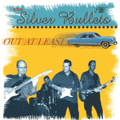

the Silver Bullets - Out At Least (Album, 2001)
01 - Crazy Little Daisy (2:43)
02 - Little Lonely Summer Girl (2:26)
03 - Hillbilly Music (2:09)
04 - Saturday Night (2:10)
05 - I'll Always Know (3:32)
06 - Lobo Jones (2:18)
07 - Pretend (3:20)
08 - Say When (2:49)
09 - Dream Lover (2:50)
10 - Bundle Of Love (2:25)
11 - Baby Lee (2:32)
12 - Only When I Dream (2:25)
13 - Following The Suspect (2:19)
14 - There Goes My Gal (2:51)
© Goofin' Records :: [GRCD 6110]
Notes
Finland.
Recorded, mixed, produced at Hideout Studios by Jyrki Häyrinen. Mastered at Editroom
Kekka Uitto - Vocals, Rhythm guitar
Eero Vaajoensuu - Lead guitar
Jari Haavistola - Electric bass
Ari Utriainen - Drums
My experience is based on its Digital release (2009)
reference information: Discogs®
Review
357/366 (Project 366)
It's just a brilliant album. Perfectly selected songs for a cover performance, one stunning own instrumental (a bit rockin' Surf - "Following The Suspect"), as well as the indescribable power of the most experienced and high-class musicians. In the tracklist it is possible to find relatively different moods, but there is a common style, especially thanks to the charismatic vocalist and classy accompaniment. Some of the recordings also feature a cruise vibe ("Pretend", "Say When").
However, the most part of the album is mighty Rock'n'Roll with a real Rockabilly drive ("Crazy Little Daisy", "Saturday Night", "Lobo Jones", "Bundle Of Love", "Baby Lee"). A blend of all the virtues in some general Rock and Pop sound ("Little Lonely Summer Girl", "Only When I Dream", "I'll Always Know"). Some killer bullets in an uncouth, sincere look ("Hillbilly Music", "There Goes My Gal"). And just a wonder sound ("Dream Lover").
In a sense, the album does not overwhelm the impression. But if you look closely, then these are just incredible cool sounding solos, a clear rhythm, rockin 'and rollin', different sides of vocal abilities, the presence of both sentimental and just everyday things. And just a good sense of style and genre.